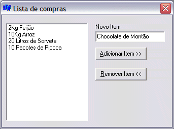
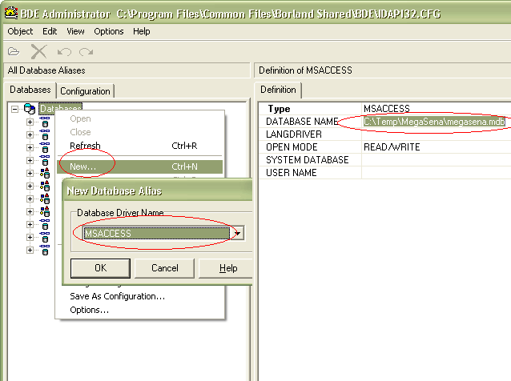

- Conceitos básicos na programação com C++ Builder
- Interação entre controles no C++ Builder
- Gerenciamento de janelas em C++ Builder
- Debug remoto no C++ Builder
- Sizeof (de novo)
- Drag and drop no C++ Builder
- Banco de dados no C++ Builder
- O que acontece quando o contador estoura
- Curiosidades inúteis: o operador de subscrito em C++
- Gambi do dia: swap com apenas duas variáveis
# Conceitos básicos na programação com C++ Builder
Caloni, 2007-12-03 <computer> [up] [copy]No projeto que é criado quando iniciamos a IDE três arquivos-fonte são gerados: Project1.cpp, Unit1.cpp e Unit1.h. Desses três, vamos analisar o primeiro:
#include <vcl.h>
WINAPI WinMain(HINSTANCE, HINSTANCE, LPSTR, int)
{
try
{
Application->Initialize();
Application->CreateForm(__classid(TForm1), &Form1);
Application->Run();
}
//...
return 0;
}
Sim, existe um WinMain e ele não está escondido! Nele você pode fazer o que quiser. A IDE apenas auxilia você a gerenciar seus forms. Note que também existe a inclusão de um cabeçalho chamado vcl.h (obrigatório), o que nos leva diretamente para a base de toda a programação Delphi/Builder.
A VCL é o framework usado tanto no Builder quanto no Delphi para a programação RAD nesses ambientes. Considere como a MFC geração C++ da Borland (antes era o OWL). Todos os controles que você vê na paleta da IDE - Button, Label, CheckBox, Timer - são criados e gerenciados através da VCL. Com os mesmos nomes acrescidos do prefixo T (TButton, TCheckBox...) você tem as classes que representam em código o que você vê no ambiente RAD. Através da VCL pode-se criar novos componentes estendidos dos originais, e eles serão gerenciados pela IDE, que aliás é feita usando VCL.
Voltando ao código: o Application é um objeto visível em todo os módulos do processo e representa a aplicação em execução. Através dele você cria e destrói forms e inicia a execução da VCL. Ah, sim, é bom lembrar que todos os objetos VCL devem ser criados no heap (usando o operador new ou algum método de um objeto VCL já criado, como o CreateForm do Application). Essa e mais algumas restrições foram impostas na criação de classes VCL para que seu comportamento fosse similar/compatível com tecnologias como COM e CORBA (além das vantagens do polimorfismo e gerenciamento automático de objetos).
Olhando para o outro fonte, Unit1.h, podemos ver a definição da classe que representa o form principal:
class TForm1 : public TForm
{
__published: // IDE-managed Components
private: // User declarations
public: // User declarations
__fastcall TForm1(TComponent* Owner);
};
extern PACKAGE TForm1 *Form1;
A classe deriva de TForm, que é uma classe da VCL que representa uma janela padrão do Windows. Como se nota, um objeto da classe é criado automaticamente, exatamente o utilizado no WinMain para a criação da janela principal.
Na classe existe um escopo estendido chamado published. Nele são colocados os membros da classe que podem ser gerenciados pela IDE. Considere como um public dinâmico. Coloque um TButton no form e note que um novo membro é criado na classe, dentro do escopo gerenciado pela IDE:
__published: // IDE-managed Components TButton *Button1;
Esses membros são iniciados automaticamente pela VCL. Contudo, você ainda pode criar objetos em tempo de execução e entregar o gerenciamento de seu tempo de vida para a VCL (o que significa chamar new e nunca um delete). Para essa proeza, todos os construtores de componentes devem receber um ponteiro para o seu Owner, que será o responsável por destruir o objeto. Veja como é ridículo criar um controle novo e definir algumas propriedades:
void __fastcall TForm1::Button1Click(TObject *Sender)
{
TButton* btn2 = new TButton(this); // this é o meu form
btn2->Parent = this; // será o owner e o parent do novo botão
btn2->SetBounds(10, 10, 150, 25); // definindo as fronteiras dentro do form
btn2->Caption = "Prazer! Sou dinâmico!";
btn2->Visible = true;
}
O Parent é o component que abriga a representação visual do objeto dentro de si. Parent e Owner são dois conceitos distintos. Pra frente veremos como as janelas são gerenciadas pela VCL e pela IDE.
É claro! O Borlando C++ Builder é coisa do passado, assim como Delphi e VB como os conhecemos. A versão nova do C++ Buider chama-se Turbo C++ (até semana passada, pelo menos). Nele as coisas são iguais mas diferentes. Ou seja, os conceitos aqui apresentados ainda valem. Só estão com uma cara diferente.
# Interação entre controles no C++ Builder
Caloni, 2007-12-05 <computer> [up] [copy]Como próxima lição da nossa jornada Borland, vamos aprender a fazer os controles de um form interagirem entre si com a força do pensamento.
Para essa proeza precisaremos de:
- Dois TButtons
- Um TEdit
- Um TListBox
Bom, sabemos já como colocar esses caras no form principal. Apenas espalhe-os de maneira que eles não fiquem uns em cima dos outros (essa técnica de espalhamento chama-se design).
Agora no evento default do Button1 (duplo-clique nele) colocaremos o seguinte código:
void __fastcall TForm1::Button1Click(TObject *Sender)
{
if( !Edit1->Text.IsEmpty() )
{
ListBox1->AddItem(Edit1->Text, 0);
Edit1->Text = "";
}
}
Percebeu? Não? Então rode e note o que acontece quando você aperta o botão.
Agora iremos fazer algo mais interessante ainda com o segundo botão. Coloque no evento default o seguinte código:
void __fastcall TForm1::Button1Click(TObject *Sender)
{
if( !Edit1->Text.IsEmpty() )
{
ListBox1->AddItem(Edit1->Text, 0);
Edit1->Text = "";
}
}
Mais simples, impossível. E com um pouco de imaginação, o mais besta dos aplicativos pode se tornar uma utilidade do dia a dia. Até sua mãe vai adorar.
# Gerenciamento de janelas em C++ Builder
Caloni, 2007-12-11 <computer> [up] [copy]As janelas criadas no C++ Builder são equivalentes às janelas criadas pela API, com o detalhe que a VCL gerencia tudo automaticamente. Isso não quer dizer que não podemos tomar controle de tudo. Quer dizer que não precisamos.
Abra o Builder. Um projeto padrão é criado. Agora no menu File, vá em New, Form. Isso adicionará um novo formulário ao projeto padrão. Pronto! Temos dois formulários. Agora se formos dar uma passeada no WinMain, vemos que o código para iniciar a VCL se alterou conforme a música:
try
{
Application->Initialize();
Application->CreateForm(__classid(TForm1), &Form1);
Application->CreateForm(__classid(TForm2), &Form2);
Application->Run();
}
Porém, se rodarmos a aplicação nesse momento, podemos notar que o programa exibe apenas a janela correspondente ao primeiro formulário. De fato, ao chamar o método Application->Run(), apenas o primeiro form criado é exibido. Isso não significa, é claro, que o segundo form não tenha sido criado. Para demonstrar como ele está lá, coloque o seguinte evento no clique de um botão do Form1:
#include "Unit2.h" // extern PACKAGE TForm2 *Form2;
void __fastcall TForm1::Button1Click(TObject *Sender)
{
Form2->Show();
}
Agora ao clicar do botão a janela correspondente ao formulário número 2 também aparece. Podemos fechá-la e abri-la quantas vezes quisermos que o aplicativo continua rodando. Apenas ao fechar a janela no. 1 o aplicativo realmente encerra. Esse comportamento segue o mesmo padrão da função main() na forma clássica das linguagens C/C++:
ShowMessage(
"O MainForm de Application"
" é o primeiro TForm criado."
" É o princípio e o fim,"
" o Alfa e o Ômega."
" Nele tudo começa"
" e tudo termina"
);
Podemos, também como em C/C++ padrão, finalizar explicitamente a aplicação chamando o método Application->Terminate. O MainForm em tempo de execução é uma propriedade de somente leitura de Application. Em tempo de design, ele pode ser alterado pela ordem de criação dos formulários no código ou pela IDE em Project, Options, Forms. Lá você também escolhe quais forms serão criados automaticamente.
Esse funcionamento e automação na criação de janelas da VCL foi feita para facilitar a vida do programador. Contudo, nunca estamos presos a somente isso. As maneiras das coisas funcionarem apenas refletem o uso mais comum no ambiente e não tem como função limitar a criatividade do desenvolvedor.
Para exemplificar, vamos inverter as coisas. Coloque um botão no segundo formulário que finalize o programa de maneira explítica:
void __fastcall TForm2::Button1Click(TObject *Sender)
{
Application->Terminate();
}
Agora, no evento de OnClose (acho que você conhece o Object Inspector, não? Bom, se não conhece, talvez isso mereça um artigo à parte) do TForm1 insira o seguinte código:
void __fastcall TForm1::FormClose(TObject *Sender, TCloseAction &Action)
{
Action = caNone;
}
Pronto! Agora você decide onde termina e onde acaba sua aplicação.
Se dermos uma olhada bem de perto no que acontece por dentro de um aplicativo que usa a VCL descobriremos que o método Run de Application nada mais é que o loop de mensagens que já conhecemos.
Para analisarmos melhor o que ocorre nos internals da coisa, criei um projeto simplista que possui dois forms, ambos com quatro botões: 1) mostrar o outro form, 2) esconder a si mesmo, 3) fechar a si mesmo e 4) terminar aplicação. Os dois formulários são tão parecidos que desconfio que sejam gêmeos.
Além disso, iremos precisar do nosso velho e fiel amigo WinDbg, o que o trás de volta à cena do crime depois de alguns artigos de jejum. Para saber mais sobre o WinDbg e dar suas "WinDbgzadas", faça uma busca no blogue.
A primeira coisa que um loop de mensagens deveria fazer seria chamar a função GetMessage, que obtém a primeira mensagem em espera na fila de mensagens da thread chamadora. Portanto, vamos dar uma olhada nas chamadas dessa função:
windbg Project1.exe 0:001> g ModLoad: addr module1.dll ModLoad: addr module2.DLL ModLoad: addr module3.dll ... Ctrl+Break 0:001> bm /a user32!GetMessage? 1: 7e4191c6 @!"USER32!GetMessageW" 2: 7e42e002 @!"USER32!GetMessageA" 0:001> g
E o resultado é... nada! Mesmo mexendo com a janela e apertando seus botões não há uma única ocorrência do GetMessage. Bruxaria? Programação oculta?
Nem tanto. Uma alternativa ao GetMessage, que captura a primeira mensagem da fila de mensagens e a retira, é o PeekMessage, que captura a primeira mensagem da fila, mas mantém a mensagem na fila. Por algum motivo, os programadores da Borland fizeram seu loop de mensagens usando PeekMessage.
0:001> bc*
0:001> bm /a user32!PeekMessage?
1: 7e41929b @!"USER32!PeekMessageW"
2: 7e41c96c @!"USER32!PeekMessageA"
0:001> g
Breakpoint 2 hit
eax=00b1c6b0 ebx=00000000 ecx=0012ff44 edx=0012fef8 esi=00b1c6b0 edi=0012fef8
eip=7e41c96c esp=0012fec8 ebp=0012ff44 iopl=0 nv up ei pl zr na pe nc
cs=001b ss=0023 ds=0023 es=0023 fs=003b gs=0000 efl=00000246
USER32!PeekMessageA:
7e41c96c 8bff mov edi,edi
Agora, sim!
Analisando os parâmetros da função PeekMessage podemos obter algumas informações interessantes sobre uma mensagem, como seu código e a janela destino:
0:000> dd @$csp L2 0019fe9c 4005aa1c 0019fec8 0:000> dd poi(@$csp+4) L6 0019fec8 00160708 00000113 00000001 00000000 0019fed8 0869c6e1 00000244
Podemos bater essas informações com as do aplicativo Spy++, que captura janelas e suas mensagens:
0:000> bd * 0:000> g
Normalmente esses dois rodando juntos podem causar alguns conflitos internos. Por isso, quando for usar o Spy++, procure desabilitar seus breakpoints. Após mexer no Spy++, feche-o antes de continuar depurando.

Como podemos ver, nesse caso a janela encontrada foi justamente a que não aparece: TApplication! Sim, a classe principal da VCL é representada em runtime por uma janela escondida, que controla algumas mensagens específicas da aplicação.
Tem tudo a ver! Mais do que simplesmente programar interfaces, esses conhecimentos permitem fazer a análise de qualquer aplicativo que possua um loop de mensagens. O importante descoberto aqui é que o C++ Builder, assim como o .NET, o Java e o "próximo framework gerenciado", não pode escapar da fatal realidade de que, para exibir janelas, o aplicativo deverá dançar a música da API Win32.
0:001> bc* 0:001> bp user32!PeekMessageA ".echo PeekMessage; g" 0:001> bp user32!DispatchMessageA ".echo DispatchMessage; g" 0:001> g PeekMessage DispatchMessage PeekMessage DispatchMessage PeekMessage ... DispatchMessage PeekMessage eax=77c3f88a ebx=00000000 ecx=77c3e9f9 edx=77c61a70 esi=7c90e88e edi=00000000 eip=7c90eb94 esp=0012fe64 ebp=0012ff60 iopl=0 nv up ei pl zr na pe nc cs=001b ss=0023 ds=0023 es=0023 fs=003b gs=0000 efl=00000246 ntdll!KiFastSystemCallRet: 7c90eb94 c3 ret
# Debug remoto no C++ Builder
Caloni, 2007-12-13 <computer> [up] [copy]Esse é um detalhe que pode passar despercebido da maioria da população Borland, mas o Builder, assim como o Visual Studio, possui sua suíte para depuração remota. E tudo o que você precisa fazer é instalar um pacote no cliente.
1. No CD de instalação, existe uma pasta chamada RDEBUG.
2. Na máquina cliente, execute o arquivo setup.exe contido nesta pasta. De preferência, não instale como um serviço (a menos que tenha um motivo).
3. Crie uma aplicação tosca de teste (ou use uma aplicação tosca existente).
4. Lembre-se que as DLLs do Builder não estarão disponíveis na máquina remota. Para não depender delas desabilite as opções "Use dynamic RTL" (aba Link) e "Build with runtime packages" (aba Packages) do seu projeto.
5. Copie a aplicação para a máquina remota ou torne-a acessível através de mapeamento.
6. Em Run, Parameters, habilite na aba Remote a opção "Debug project on remote machine"
7. Em Remote Path especifique o path de sua aplicação visto da máquina remota.
8. Em Remote Host especifique o nome ou o IP da máquina remota.
9. Execute o aplicativo através do Builder (certifique-se que o cliente do Builder está rodando na máquina remota).
10. Bom proveito!
Infelizmente essa opção não está disponível nas versões Standard do produto, assim como não está o debugging remoto no Visual Studio Express. Porém, a nova versão do Builder, renomeada para Borland Turbo C++, é gratuita a possui essa feature embutida. O único porém é que a instalação não é automatizada, e os arquivos devem ser copiados "na mão", seguindo um dos tópicos da ajuda. Melhor que nada.
Para os que utilizam o Visual Studio Express, realmente ainda não achei solução a não ser usar o bom, velho e fiel companheiro WinDbg. Não saia de casa sem ele.
# Sizeof (de novo)
Caloni, 2007-12-17 <computer> [up] [copy]Algumas coisas em C parecem tão simples na programação do dia-a-dia que em alguns momentos podem existir situações confusas e misteriosas. O uso obscuro do operador sizeof, por exemplo, pode dar margem a interpretações erradas a respeito do que está acontecendo por debaixo dos panos. Apesar do padrão ter sido elaborado para tentar tornar a linguagem uma coisa intuitiva e de fácil dedução, isso não acontece todas as vezes.
Vamos tomar, por exemplo, o seguinte minicódigo:
size_t len = sizeof("A simple string");
memcpy(buf, "A simple string", len);
A pergunta ingênua: quantos bytes são copiados para buf?
A resposta ingênua: er... o tamanho de "A simple string"?
Agora vamos supor que você é um pouco mais esperto e começa a pensar: "mas, peraí, estou passando na realidade um ponteiro para sizeof, o que quer dizer que, se meus cálculos estiverem corretos, e estivermos em uma plataforma de 32 bits, sizeof deve retornar 4, o que quer dizer que acabei de achar um bug escabroso, uhuu!".
Muito bem, o raciocínio é perfeito. Afinal de contas, "A simple string" é um ponteiro para um array de caracteres terminados em zero, certo?
Estou quase certo disso. Porém, isso quer dizer que já deixei vários bugs escabrosos há uns 4 anos atrás em trechos de código parecidos com esse. Será que eu estava errado e não me dei conta, ou sabia de algo que esqueci faz muito tempo?
Eu e meu amigo demos uma olhada no padrão da linguagem C de 89 (revisão de 90), que diz duas coisas muito importantes nesse momento: o que é um sizeof e o que é uma string constante (chamada no padrão de string literal):
#### Sizeof (6.3.3.4)
The sizeof operator yields the size (in bytes) of its operand, which may be an expression or the parenthesized name of a type. The size is determined from the type of the operand, which is not itself evaluated. The result is an integer constant.
#### String literal (6.1.4)
A character string literal is a sequence of zero or more multibyte characters enclosed in double-quotes, as in "xyz". A wide string literal is the same, except prefixed by the letter L. (...) The multibyte character sequence is then used to initialize an array of static storage duration and lenght just sufficient to contain the sequence.
Em C++ (padrão ISO de 98) o texto é muito parecido, apenas abragendo também o conceito de type-id (desnecessário explicar para o contexto deste artigo):
#### Sizeof (5.3.3)
The sizeof operator yields the number of bytes in the object representation of its operand. The operand is either an expression, which is not evaluated, or a parenthesized type-id.
#### String literal (2.13.4)
A string literal is a sequence of characters (as defined in 2.13.2) surrounded by double quotes, optionally beginning with the letter L, as in "..." or L"...". (...) An ordinary string literal has type "array of n const char" and static storage duration (...).
Esses textos do padrão demonstram que o operador sizeof irá retornar o número de bytes baseado no tipo do operando, e que o tipo de uma string literal é de array de caracteres com o tamanho justo para caber a string.
Bem, todos sabemos o resultado das linhas abaixo:
char charArray[100]; size_t len = sizeof(charArray);
Nesse caso é simples de observar que o operador sizeof irá retornar 100, que é o número em bytes para abrigar o tipo do operando, que é de "array de 100 caracteres". Podemos, então, imaginar que a nossa idiomática expressão do início é no fundo um resumo das linhas que se seguem.
... static char aSimpleString[] = "A simple string"; ... size_t len = sizeof(aSimpleString); memcpy(buf, aSimpleString, len);
Ou seja, o tipo de nossa string é na verdade de array estático de caracteres, como se uma variável tivesse sido definida anteriormente com o conteúdo da string, que deve estar em algum lugar da memória do programa. Visto dessa forma fica bem mais simples de entender o que acontece na versão resumida.
O mais encorajador desse problema do sizeof é que a resposta ingênua estava certa, ou seja, pelo menos dessa vez, o padrão conseguiu através de suas regras seguir a intuição do programador.
# Drag and drop no C++ Builder
Caloni, 2007-12-19 <computer> [up] [copy]O sistema de drag and drop do C++ Builder é muito fácil de usar, integrado que está com o sistema de classes e objetos do framework. Tanto para o objeto de drag quanto para o objeto de drop tudo que temos que fazer é definirmos a propriedade DragMode para dmAutomatic como mostra a figura. Isso fará com que toda a troca de mensagens seja manipulada automaticamente pela VCL.

A parte (ridídula) do código fica por conta da manipulação do evento de drop. Para aceitar um objeto, devemos tratar o evento OnDragOver. Basta isso para que a variável Accept tenha seu valor default definido para true. Podemos, entretanto, escolher se iremos ou não tratar um possível drop de um objeto. Verificando seu tipo, por exemplo:
void __fastcall TMain::FormDragOver(TObject *Sender, TObject *Source,
int X, int Y, TDragState State, bool &Accept)
{
Accept = true;
}
void __fastcall TMain::ListBoxDragOver(TObject *Sender, TObject *Source,
int X, int Y, TDragState State, bool &Accept)
{
Accept = dynamic_cast<TWinControl*>( Source ) ? true : false;
}
A parte mais interessante do código fica por conta da hora que o objeto é "jogado", no evento OnDragDrop. Nela recebemos o ponteiro para o Sender (como sempre), que é o target object, e um Source. Geralmente para manipular o source object é necessário antes realizar um cast para um tipo mais conhecido.
void __fastcall TMain::ListBoxDragDrop(TObject *Sender, TObject *Source,
int X, int Y)
{
if( TListBox* listBox = dynamic_cast<TListBox*>(Sender) )
{
TWinControl* winCtrl = static_cast<TWinControl*>(Source);
if( listBox != winCtrl )
{
listBox->Items->Add(winCtrl->Name);
winCtrl->Visible = false;
}
}
}
void __fastcall TMain::FormDragDrop(TObject *Sender, TObject *Source,
int X, int Y)
{
if( TForm* form = dynamic_cast<TForm*>(Sender) )
{
TControl* ctrl = 0;
if( TListBox* listBox = dynamic_cast<TListBox*>( Source ) )
{
for( int i = 0; i < listBox->Count; ++i )
{
if( listBox->Selected[i] )
{
ctrl = this->FindChildControl(listBox->Items->Strings[i]);
listBox->Items->Delete(i);
break;
}
}
}
else
ctrl = dynamic_cast<TControl*>(Source);
if( ctrl )
{
ctrl->Top = Y;
ctrl->Left = X;
ctrl->Visible = true;
}
}
}
E mais uma vez voilà! Pouquíssimas linhas de código e um movimentador e empilhador de controles. Dois detalhes merecem ser destacados:
- O uso de dynamic_cast em cima dos ponteiros da VCL é uma maneira saudável de checar a integridade dos tipos recebidos - particularmente do Sender. O uso do primeiro parâmetro dos tratadores de eventos também torna o código menos preso à componentes específicos do formulário;
- O método FindChildControl é deveras útil quando não temos certeza da existência de um controle. Geralmente é uma boa idéia confiar no sistema de gerenciamento de componentes da VCL. Não é à toa que existe um framework por baixo do ambiente RAD.
# Banco de dados no C++ Builder
Caloni, 2007-12-21 <computer> [up] [copy]Um banco de dados é qualquer lugar onde podemos ler e escrever informação geralmente persistente. Pode ser um arquivo INI, uma estrutura binária ou uma plantação de servidores para fazer busca na internet. O uso de banco de dados em programação é mais que essencial, pois permite que armazenemos os resultados de um processamento e utilizemos esses mesmos resultados em futuras execuções.
Visando preencher algumas lacunas na internet sobre esse tema iremos agora nos aventurar na configuração e uso de um banco de dados no C++ Builder.
Obs. de camarada: banco de dados pode ser uma coisa bem chata. Contudo, a vida não é completa sem as partes chatas. O conhecimento dessa área é vital para a sobrevivência de muito desenvolvedores de software. Além do mais, pode se tornar bem mais interessante em algumas situações, como o estudo sobre normalização.
Quase como um prêmio de consolação por participarmos de um sorteio que sabemos que não iremos ganhar nunca, a Caixa Econômica Federal generosamente oferece a opção de baixarmos todos os resultados da Mega Sena desde seu início. Iremos utilizar esse banco de dados para criar uma interface de visualização de resultados no C++ Builder.
Um problema inicial está no fato que o arquivo está no formato HTML, um formato mais difícil de usarmos no C++ Builder. Portanto, irei converter este formato em algo mais maleável, como um arquivo do Microsoft Access, o famoso MDB, ou um CSV.
Para a conversão, nada mais que algumas expressões regulares e macros de edição não resolvam em 5 minutos, sem contar a opção de importação do próprio Access.
Neste tutorial vamos usar aquilo que é o configurador oficial de banco de dados no C++ Builder: o BDE. Se você ainda não observou, após a instalação do C++ Builder um novo item surgiu no Painel de Controle, o BDE Administrator. Vamos usá-lo para configurar uma base de dados baseada no nosso arquivo MDB recém-gerado.
Criado o MDB, podemos clicar no BDE Administrator do Painel de Controle. A única coisa que precisamos fazer é criar uma nova base de dados, e especificar seus poucos parâmetros, como o tipo de base (MSACCESS) e o path de onde está o arquivo MDB.
Ah, sim, claro, também é importante colocar um nome apropriado para a base de dados: MegaSena.
A partir daí clicando no botão Apply tudo deve fluir. Como em informática tudo quer dizer nada, eu deixo por conta do leitor a resolução de quaisquer problemas que acontecerem durante a configuração.
Criado o banco e testado (experimente conectar pelo próprio BDE) podemos agora criar um novo projeto VCL e colocar alguns componentes interessantes feitos especialmente para banco de dados. São eles:
- TDatabase: representa a própria base da dados, onde especificamos o nome da base de dados que vamos utilizar.
- TTable: representa uma tabela de uma base de dados.
- TDataSource: a origem dos dados que serão usados para popular seja lá o que quisermos popular.
Abaixo segue a configuração de cada um deles, ou seja, as propriedades que você deve mudar para que tudo funcione.
object Database1: TDatabase
AliasName = 'MegaSena'
Connected = True
DatabaseName = 'MegaSena'
LoginPrompt = False
end
object Table1: TTable
Active = True
DatabaseName = 'MegaSena'
TableName = 'Resultados'
end
object DataSource1: TDataSource
DataSet = Table1
end
Após todos esses componentes não-visuais terem sido inseridos no form, nada como colocar alguma coisa que o usuário veja: um TDBGrid.
object DBGrid1: TDBGrid
DataSource = DataSource1
end
Com isso, nossa janela já exibe o conteúdo da tabela em tempo de design:

E é isso! Se chegamos até aqui, já sabemos o arroz com feijão de usar banco de dados com o C++ Builder. Mais para a frente podemos nos aventurar em tópicos um pouco mais avançados, como fazer buscas, navegar item a item e essas coisas que as pessoas costumam fazer com um MDB.
- 2021-03-27. Durante a revisão deste post eu tentei rodar a aplicação sem sucesso. Existem erros na abertura e configuração do arquivo mdb que não perdi mais tempo tentando resolver.
# O que acontece quando o contador estoura
Caloni, 2007-12-25 <computer> [up] [copy]Dois conceitos de programação relacionados a limites computacionais são bem conhecidos do programador: o famigerado overflow e o não-tão-famoso underflow (embora seja fácil imaginar que ele é o oposto do primeiro). O primeiro ocorre quando somamos a uma variável inteira não-nula um valor cujo resultado não consegue ser representado pelo tamanho de memória usado para armazenar esse tipo inteiro (que pode ser um caractere, um inteiro curto, inteiro longo e por aí vai). O underflow, por outro lado (outro lado mesmo), é o resultado de uma subtração que não pode ser representado pelo número de bits do seu tipo inteiro.
Nada melhor que um código para ilustrar melhor esses dois ilustres acontecimentos:
#include <limits.h>
#include <iostream>
int main()
{
int x = INT_MAX;
std::cout << x << std::endl;
x = x + 1;
std::cout << x << std::endl;
}
Saída:
2147483647
-2147483648
O indicador de que algo está errado é simples: como diabos foi um número positivo virar negativo, já que eu somei ao invés de subtrair? No entanto, computacionalmente parece extremamente correto: o próximo número após o maior valor positivo possível é o menor número negativo possível.
Nos computadores atuais tudo no final acaba sendo representado por zeros e uns, até o sinal de negativo dos números menores que zero. Por isso mesmo, para que consigamos usar números menores que zero, precisamos gastar um bit para indicar que este número é negativo. Existem muitas representações interessantes, dentre as quais a mais popular acabou sendo a de complemento de dois. A regra é simples:
Toda representação binária que tiver o bit mais significativo ligado (o bit mais à esquerda) significa um número negativo cujo valor absoluto se obtém invertendo-se o resto dos bits e adicionando um.
Quando o bit mais à esquerda não está ligado o valor absoluto é ele mesmo; ou seja, é um número positivo, incluindo o zero. Como vamos ver, isso facilita em muito os cálculos para o computador. Para nós, a coisa não fica lá muito difícil. Só precisamos lembrar que, em hexadecimal, todos os valores que tiverem o byte mais significativo igual ou maior que 8 (que é 1000 em binário) é negativo e temos que aplicar o método de complemento de dois para obter seu valor absoluto. Vejamos o valor -8, por exemplo:
1. Primeiro temos a representação real (em um byte): 1111 1000.
2. O bit mais significativo está ligado: é um número negativo. Descartamos o sinal, fica 111 1000.
3. Devemos agora inverter todos os bits: 111 1000 se torna 000 0111.
4. Por fim, somamos um: 000 0111 + 1 = 000 1000.
5. Como vimos no parágrafo anterior, 000 1000, ou simplesmente 1000, é 8. Na verdade, -8!
O que significa, na notação complemento de dois, a representação onde estão todos os bits ligados, independente do número de bytes?
Se alterarmos o código acima para imprimir na saída os números hexadecimais, obteremos a seguinte saída:
7fffffff 80000000
E o mais legal é que agora sabemos que o primeiro número é o maior valor positivo possível nesse tamanho de int, pois possui todos os bits ligados exceto o bit de sinal. Já o segundo número, o primeiro incrementado de 1, possui todos os bits desligados exceto o bit de sinal: é o menor número negativo possível!
Consegue imaginar como os cálculos são feitos pelo computador? Curioso? Então dê uma olhada na Wikipedia sobre complemento de dois.
# Curiosidades inúteis: o operador de subscrito em C++
Caloni, 2007-12-27 <computer> [up] [copy]Este artigo é uma reedição de meu blogue antigo, guardado para ser republicado durante minhas miniférias. Esteja à vontade para sugerir outros temas obscuros sobre a linguagem C ou C++ de sua preferência. Boa leitura!
Em C e C++ as regras de sintaxe são extremamente flexíveis. Essa liberdade toda se manteve no decorrer dos tempos porque se trata de uma das idéias fundamentais da linguagem C, motivo de sua criação. Me lembro certa vez que, bitolado em C Standard 89, usei uma sintaxe não lá muito usual para acessar um elemento de um array. Foi apenas um experimento de estudante, coisa que nunca vi em código algum e queria comprovar.
As regras de acesso a elementos de um array (subscrito) são definidas não em termos do array, mas em termos de um ponteiro e de um índice. "Me dê um ponteiro para T e um inteiro e te retorno um lvalue do tipo T". Essa é a idéia geral. A mesma idéia, com pequenas alterações, se manteve em C++. Eis parte do parágrafo que fala sobre isso:
A postfix expression followed by an expression in square brackets is a postfix expression. One of the expressions shall have the type "pointer to T" and the other shall have enumeration or integral type. The result is an lvalue of type "T". (...) The expression E1 [ E2 ] is identical (by definition) to *( (E1) + (E2) ).
C++: International Standard ISO/IEC 14882 First Edition 1998-09-01
Isso traduzido em miúdos quer dizer que com duas expressões formando a construção E1 E2 , sendo uma delas do tipo ponteiro para um tipo e a outra do tipo integral, o resultado é equivalente a *( (E1) + (E2) ). Como no código abaixo:
#include <iostream>
int main()
{
char ditado[] = "Diga-me com que programas e eu te direi quem és.";
int indice = 8;
std::cout << "E a linguagem é: " << ditado[indice] << std::endl;
}
A teoria comprovada na prática: temos duas expressões no formato E1 E2 sendo uma do tipo ponteiro para char e a outra do tipo int, exatamente como a regra define. O detalhe obscuro que permaneceu durante a evolução dessas duas linguagens é que a regra de acesso a elementos não define a ordem das expressões. Assim sendo, me aproveito dessa flexibilidade e inverto os elementos do subscrito:
std::cout << "E a linguagem é: " << indice[ditado] << std::endl;
Isso também compila e tem o mesmo resultado, pois também é equivalente a *( (E1) + (E2) ). No final dá na mesma. E do jeito que está a inversão nem dá tanto susto assim, pois estamos lidando com duas variáveis. A coisa começa a ficar mais IOCCC se colocarmos em vez de uma delas uma constante:
std::cout << "E a linguagem é: " << 8[ditado] << std::endl;
Isso ainda é válido, certo? Os tipos das expressões estão de acordo com a regra. Fica simples de visualizar se sempre pensarmos no "equivalente universal" *( (E1) + (E2) ). Até coisas bizarras como essa acabam ficando simples:
std::cout << 5["Isso Compila?"] << std::endl;
Nota do autor: esse tipo de "recurso obscuro" dificilmente passará por uma revisão de código, e com razão, dado que não é um método útil e muito menos conhecido. Sábio é saber evitar. Não acredito, porém, que o conhecimento de certos detalhes da linguagem em que se programa sejam completamente inúteis. Conhecimento nunca é demais, pois quanto mais se conhece maior é o número de ferramentas conceituais que se dispõe para resolver um certo problema. Em muitas vezes o "conhecimento inútil" de hoje se torna um guia sábio quando se precisa de bons conceitos sobre a coisa toda. No entanto, que não venha um boi-corneta me dizer que esse código fere as boas práticas de programação. Tenho dito.
# Gambi do dia: swap com apenas duas variáveis
Caloni, 2007-12-31 <computer> [up] [copy]Este artigo é uma reedição de meu blogue antigo, guardado para ser republicado durante minhas miniférias. Esteja à vontade para sugerir outros temas obscuros sobre a linguagem C ou C++ de sua preferência. Boa leitura!
Essa interessantíssima questão veio do meu amigo Kabloc: como trocar o valor entre duas variáveis do tipo int sem utilizar uma variável intermediária? O algoritmo ordinário para um swap entre tipos inteiros é:
void normalSwap(int &first, int& second)
{
int third = first;
first = second;
second = third;
}
int main()
{
int first = 13;
int second = 42;
cout << "first: " << first
<< ", second: " << second << endl;
normalSwap(first, second);
cout << "first: " << first
<< ", second: " << second << endl;
}
Saída: first: 13, second: 42 first: 42, second: 13
Uma das soluções que eu conheço é utilizar o operador de ou exclusivo, o conhecido XOR. Esse operador binário tem a não pouco bizarra habilidade de armazenar dois padrões de bits dentro de um mesmo espaço de armazenamento. Se você tiver um dos dois padrões, conseguirá o segundo. Relembremos sua tabela verdade:
void xorTable()
{
cout
<< "-----------\n"
<< " XOR Table\n"
<< "-----------\n"
<< "0 XOR 0 = " << ( 0 ^ 0 ) << '\n'
<< "1 XOR 0 = " << ( 1 ^ 0 ) << '\n'
<< "0 XOR 1 = " << ( 0 ^ 1 ) << '\n'
<< "1 XOR 1 = " << ( 1 ^ 1 ) << '\n'
;
}
-----------
XOR Table
-----------
0 XOR 0 = 0
1 XOR 0 = 1
0 XOR 1 = 1
1 XOR 1 = 0
Ou seja, imagine que temos o valor 1 e o valor 0. Armazenando os dois juntos com XOR obtemos 1, já que:
1 (primeiro padrão) XOR 0 (segundo padrão) = 1 (padrões juntos)
Mais tarde, se quisermos obter o primeiro padrão, usamos o segundo:
1 (padrões juntos) XOR 0 (segundo padrão) = 1 (primeiro padrão)
Para obter o segundo padrão é só utilizar o primeiro obtido:
1 (padrões juntos) XOR 1 (primeiro padrão) = 0 (segundo padrão)
Calcule a mesma operação com as quatro combinações possíveis e verá que podemos sempre reaver os dados partindo de um dos padrões. Como o cálculo independe do número de bits, já que operadores bit a bit operam um bit de cada vez, podemos usar a mesma técnica para juntar dois inteiros, duas strings, dois "qualquer coisa armazenada numa seqüência de zeros e uns":
template<
typename T1,
typename T2,
typename T3
>
void universalXor(
const T1& first,
const T2& second,
T3& result
)
{
typedef unsigned char byte;
const byte* pFirst =
reinterpret_cast<const byte*>
(&first);
const byte* pSecond =
reinterpret_cast<const byte*>
(&second);
byte* pResult =
reinterpret_cast<byte*>
(&result);
for( size_t i = 0;
i < sizeof(first)
&& i < sizeof(second);
++i )
{
pResult[i] = pFirst[i] ^ pSecond[i];
}
}
int main()
{
int x = 13, y = 42;
cout << "x: " << x
<< ", y: " << y << '\n';
universalXor(x, y, x);
universalXor(x, y, y);
universalXor(x, y, x);
cout << "x: " << x
<< ", y: " << y << "\n\n";
char str1[50] = "teste de xor";
char str2[50] = "aceita strings!";
cout << "str1: " << str1
<< ", str2: " << str2 << '\n';
universalXor(str1, str2, str1);
universalXor(str1, str2, str2);
universalXor(str1, str2, str1);
cout << "str1: " << str1
<< ", str2: " << str2 << '\n';
return 0;
}
Saída:
x: 13, y: 42
x: 42, y: 13
str1: teste de xor, str2: aceita strings!
str1: aceita strings!, str2: teste de xor
Essa técnica é uma das mais básicas -- se não for a mais -- de criptografia simétrica. O primeiro padrão faz o papel de texto aberto, o segundo banca a senha e o terceiro será o texto encriptado. Para "desencriptar" o texto é necessária a senha (e se você souber qual o texto original, saberá a senha).
Mas, voltando ao nosso problema original, podemos trocar duas variáveis inteiras usando a técnica do XOR. Em claro:
#include <iostream>
using namespace std;
void anormalSwap(int &first,
int& second)
{
first = first ^ second;
second = first ^ second;
first = first ^ second;
}
int main()
{
int first = 13;
int second = 42;
cout << "first: " << first
<< ", second: " << second << endl;
anormalSwap(first, second);
cout << "first: " << first
<< ", second: " << second << endl;
}
Saída:
first: 13, second: 42
first: 42, second: 13
Bom, preciso dizer que isso é uma gambi das grossas? Preciso dizer que não uso isso no meu dia a dia, até porque swap é uma função já consagrada da STL chamada std::swap? Não? Então sem Postscript dessa vez. E sem bois-cornetas =).
[2007-11] [2008-01]